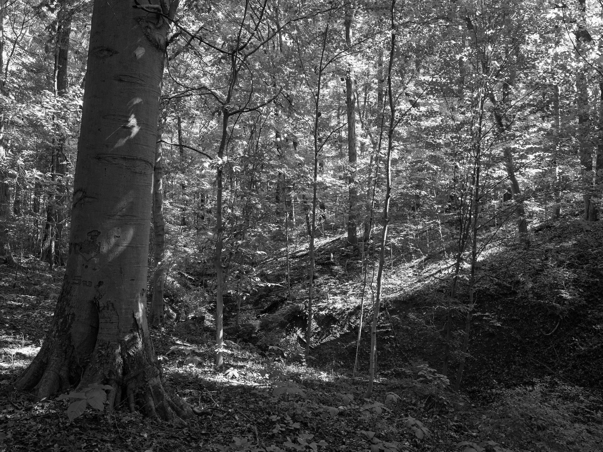
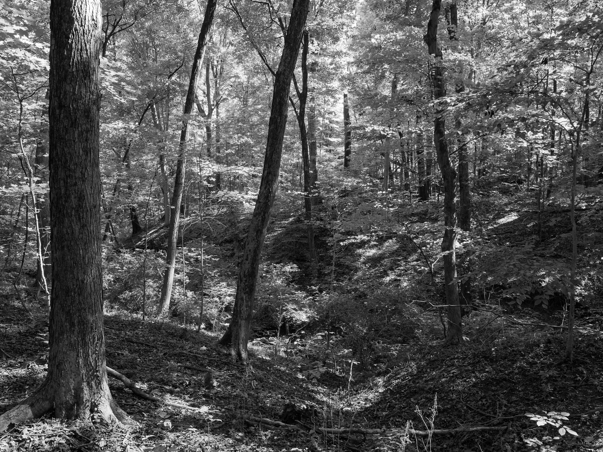
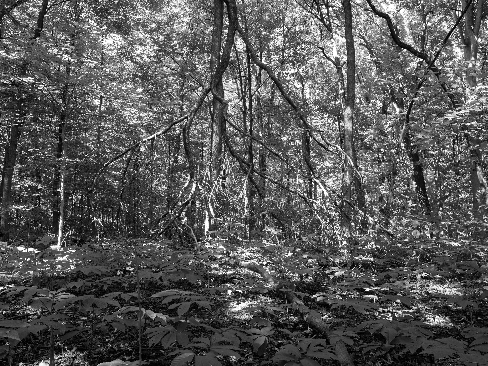
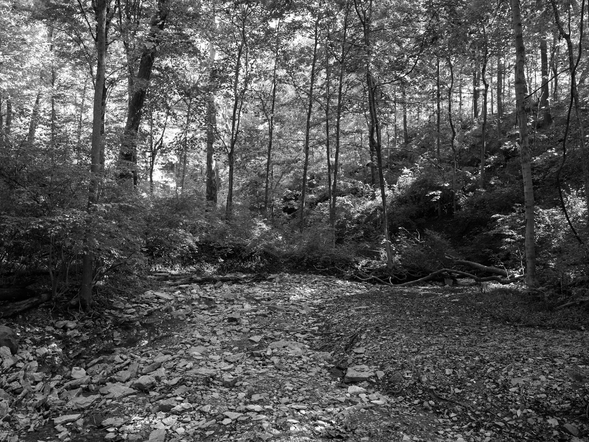
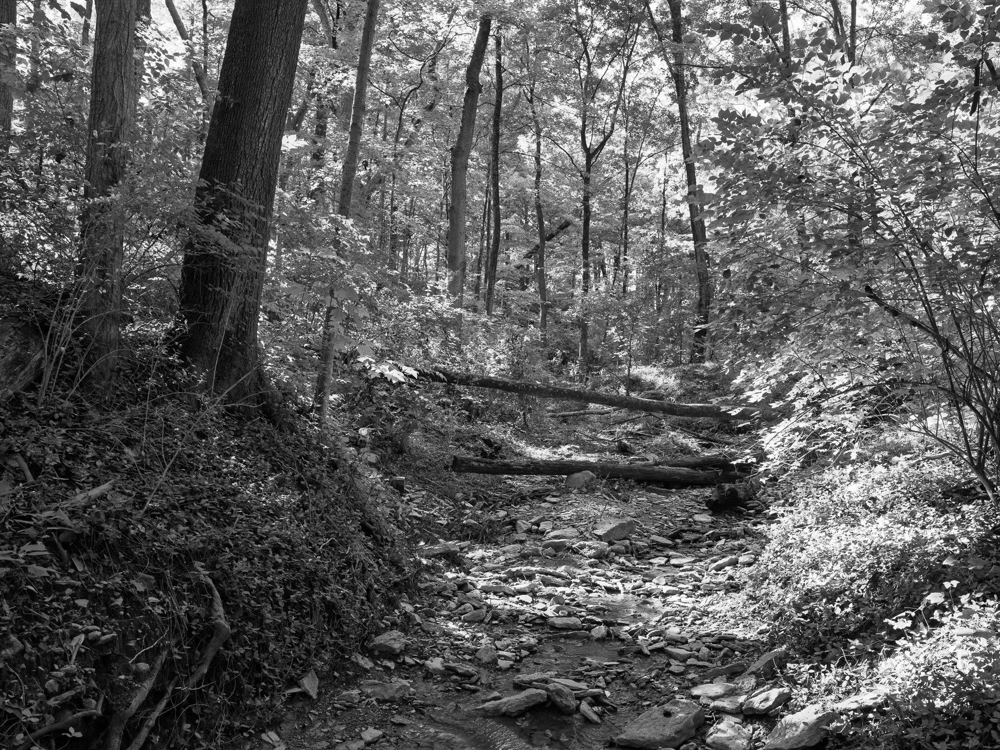

Public Lands Institute
Map
Images
Archive
About
Caldwell Nature Preserve
OH

Caldwell Nature Preserve 1 · 2026-09-06
_DSF4559.jpg

Caldwell Nature Preserve 2 · 2026-09-06
_DSF4565.jpg

Caldwell Nature Preserve 3 · 2026-09-06
_DSF4567.jpg

Caldwell Nature Preserve 4 · 2026-09-06
_DSF4570.jpg

Caldwell Nature Preserve 5 · 2026-09-06
_DSF4571.jpg
View all 5 images →
Bell Smith Springs Recreation Area →